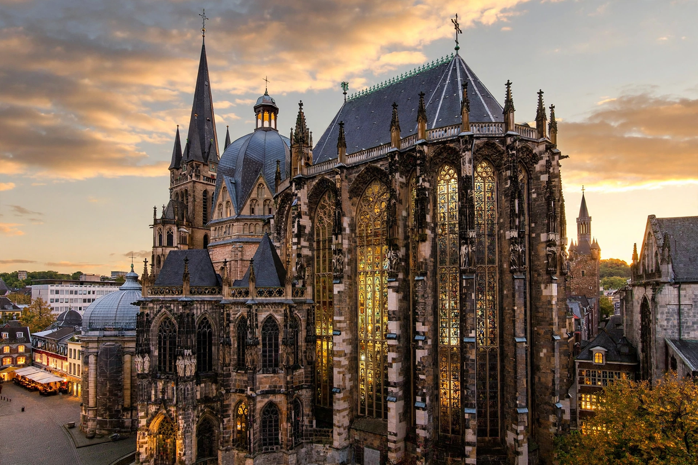

| German name | Aachener Dom |
|---|---|
| Location | Aachen, North Rhine-Westphalia, Germany |
| Built | c. 796–805 (Palatine Chapel); choir 1355–1414 |
| Founder | Charlemagne |
| Contains | Tomb of Charlemagne; Shrine of Charlemagne; Shrine of the Virgin Mary; Barbarossa Chandelier |
| UNESCO | World Heritage Site since 1978 (one of the first twelve worldwide; the first in Germany) |
Aachen Cathedral (German: Aachener Dom) is a Roman Catholic church in Aachen, Germany, and the see of the Diocese of Aachen. Built around the Palatine Chapel commissioned by Charlemagne from about 796, it is one of the oldest cathedrals in Europe and a landmark of Carolingian architecture. For some 600 years, from 936 to 1531, thirty-one German kings and twelve queens were crowned in the chapel, and the cathedral holds some of the most venerated relics in northern Europe. In 1978 it was among the first twelve sites inscribed on UNESCO's World Heritage List, and the first German site so honoured.
Charlemagne made Aachen the principal residence of his empire and ordered a palace church modelled on Byzantine buildings such as San Vitale in Ravenna. Its architect, Odo of Metz, raised a sixteen-sided outer wall around an octagonal domed core — the first vaulted structure of its kind north of the Alps — clad in marble and mosaics and furnished with columns and bronze work brought from Rome and Ravenna. Charlemagne died in 814 and was buried in the chapel; his remains now rest in the golden Shrine of Charlemagne, completed in 1215. His son Louis the Pious was crowned here in 813, and Otto I began the long coronation tradition in 936.
A soaring Gothic choir hall, begun in 1355 and consecrated in 1414 — a glass-walled "glass house of Aachen" modelled on the Sainte-Chapelle — was added east of the octagon to house the pilgrim crowds drawn by the cathedral's great relics: the dress of the Virgin Mary, the swaddling clothes and loincloth of Christ, and the cloth that held the head of John the Baptist, displayed at the Aachen pilgrimage (Heiligtumsfahrt) held every seven years. Other treasures include the ornate Pala d'Oro altar frontal, the Ambo of Henry II, and the great wheel-shaped Barbarossa Chandelier donated by Emperor Frederick Barbarossa. The cathedral survived the Second World War with relatively light damage thanks in part to its volunteer fire-watch of local youths.
This article is a recreation from memory for the muse-webcrawl project.